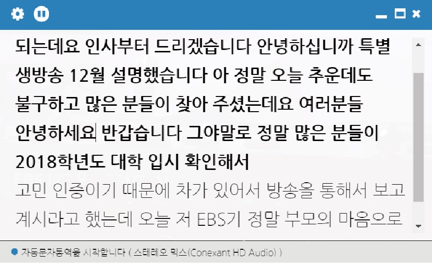

Geekble Stage
On-stage talk which entertains science for students
2019 - Present
Augmenting Physical Buttons
Providing programmable feels with vibrotactile feedback
2019
Interactive Torque Designer
Dynamic analysis through graphic interaction
2019

Sovoro
Auto transcription software for people with hearing loss
2018
Sovoro
My role: UI/UX research & design, market research, business activity, catalog design
Collaborator: Jihyeon Yoon, Seungman Choi, and Yongtaek Kwon
Sovoro develops auto transcription software using real-time speech-to-text voice recognition engine as a social start-up. Service targets people with hearing loss who want to take usual on/offline class or seminar. Since existing solutions, such as stenography or sign language, failed to satisfy with this need because of expensive cost and inefficiency for daily usage, Sovoro improves educational circumstance of people with hearing loss as overcoming these problems through viable software.
Proposed user interface and user experience as a communication manager focused on showing transcript in a clear way. Minimizing menu buttons and always-on-top script panel are naturally followed in this manner.
Additionally, user can modify font size, transparency, language through setting.
 First prototype only focused on internal sound of computer for online class or seminar. However, several interviews about user interface and user experience with people who have hearing loss suggest another need about external
sound of computer.
Therefore, adding external mic, which is portable, wireless, and reasonable in operating distance, expands function of software to cover offline lecture, business interview, or daily talk.
First prototype only focused on internal sound of computer for online class or seminar. However, several interviews about user interface and user experience with people who have hearing loss suggest another need about external
sound of computer.
Therefore, adding external mic, which is portable, wireless, and reasonable in operating distance, expands function of software to cover offline lecture, business interview, or daily talk.
Developed software with iterative design process made contracts with Korea Employment Agency for the Disabled, university, and center for people of hearing loss to provide educational assistance. Furthermore, software and result of contract bridged to 30 million Won seed funding and accelerating of Sopoong, a social venture accelerator.
Collaborator: Jihyeon Yoon, Seungman Choi, and Yongtaek Kwon
Sovoro develops auto transcription software using real-time speech-to-text voice recognition engine as a social start-up. Service targets people with hearing loss who want to take usual on/offline class or seminar. Since existing solutions, such as stenography or sign language, failed to satisfy with this need because of expensive cost and inefficiency for daily usage, Sovoro improves educational circumstance of people with hearing loss as overcoming these problems through viable software.

Developed software with iterative design process made contracts with Korea Employment Agency for the Disabled, university, and center for people of hearing loss to provide educational assistance. Furthermore, software and result of contract bridged to 30 million Won seed funding and accelerating of Sopoong, a social venture accelerator.
Book Borrowing Robot
Supporting book borrowing process in the library
2017
Book Borrowing Robot
My role: software development, presentation
Collaborator: Youngsin Kim, Sehwan Rho, Doohee Kim, and Donghyeon Lim
When users want to find a book in the library, they have to search book, find location of the specific bookshelves, and take it to the machine to proceed borrowing process. As bachelor thesis project, my team proposed Book Borrowing Robot to make book borrowing process automative and much easier.
Robot has gripper, camera, 3 number of microcontroller units, and motors.
With information of bookshelf coordination, robot performs automatic driving to near the bookshelf with given map information.
After performing precise driving with camera vision control until specific distance.
Finally, robot drags book with gripper and rewinds previous driving process to bring it back to the user.

 Implementing mapping algorithm and vision control system enables automatic driving and precision driving until camera captures QR code each.
Presentation of the project as the representative of the team successfully delivered contents.
Implementing mapping algorithm and vision control system enables automatic driving and precision driving until camera captures QR code each.
Presentation of the project as the representative of the team successfully delivered contents.
Collaborator: Youngsin Kim, Sehwan Rho, Doohee Kim, and Donghyeon Lim
When users want to find a book in the library, they have to search book, find location of the specific bookshelves, and take it to the machine to proceed borrowing process. As bachelor thesis project, my team proposed Book Borrowing Robot to make book borrowing process automative and much easier.
Ankle Rehabilitation Assistant
Analyzing ankle torque and providing rehabilitative movement
2017